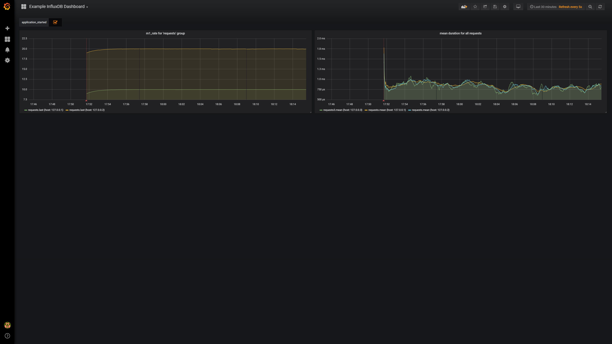

inspector-influx
Typescript Metrics Reporter for InfluxDB.


This library is made for inspector-metrics node module and
is meant to be used with nodejs.
It uses node-influx as influxdb client.
install
npm install --save inspector-influx
basic usage
import { DefaultSender, InfluxMetricReporter } from "inspector-influx";
import { MetricRegistry, Timer } from "inspector-metrics";
// influxdb config from https://github.com/node-influx/node-influx/blob/master/src/index.ts#L80
const dbConfig = {
"username": "admin",
"password": "admin",
"database": "example-db",
"hosts": [
{ "host": "influx", "port": 8086 }
]
};
const sender = new DefaultSender(dbConfig);
const reporter: InfluxMetricReporter = new InfluxMetricReporter({
sender,
});
const registry: MetricRegistry = new MetricRegistry();
const requests: Timer = registry.newTimer("requests");
reporter.setLog(global.console);
reporter.addMetricRegistry(registry);
reporter.start();
// example usage
setInterval(() => {
// should report a few milliseconds
requests.time(() => {
let a = 0;
let b = 1;
for (let i = 0; i < 1e6; i++) {
a = b + i;
}
});
}, 100);local dev
using the playground
To use the playground you need to have docker and docker-compose installed.
# boots all services (influxdb / grafana) and provisions the example dashboard
test-env/boot.sh
# running playground script
./playground.shview data in grafana
- Navigate to
http://localhost:3000 - Navigate to the example dashboard (upper left corner "Home"): "Example InfluxDB Dashboard"

compile & test with different nodejs versions
build docker images:
docker-compose buildrun tests:
docker-compose run node6
docker-compose run node7
docker-compose run node8
docker-compose run node9
docker-compose run node10
docker-compose run node11